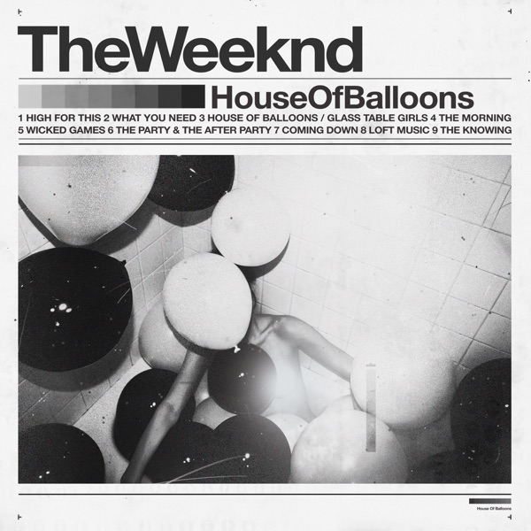
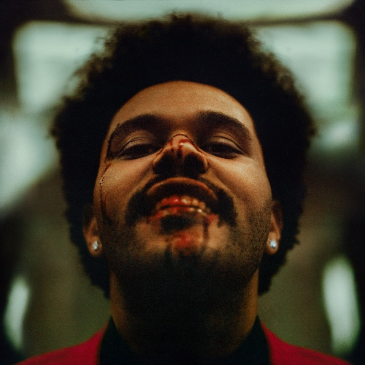

2011
House of Balloons
Mysterious online releases, warped samples and haunting vocals introduced a darker, atmospheric kind of R&B.
A fan-made celebration
Singer. Producer. World-builder. A celebration of the artist who turned late-night R&B into a cinematic universe heard around the world.
after hours, always ✦
01 — The story
His signature? A soaring falsetto inside a dark, neon-lit universe.
Abel Makkonen Tesfaye, known professionally as The Weeknd, is a Canadian singer, songwriter and producer born on 16 February 1990. He first drew attention by uploading music anonymously before his 2011 mixtapes introduced a shadowy new sound in alternative R&B.
His music blends R&B, pop and electronic production with recurring characters and cinematic visuals. From the darkness of Trilogy to the bright synths of After Hours, each album feels like another chapter in the same restless, late-night story.
02 — The chapters

Mysterious online releases, warped samples and haunting vocals introduced a darker, atmospheric kind of R&B.
03 — Mood matcher
Pick the mood that fits right now. Your Weeknd song match will appear beside it.

Your matchThere is a Weeknd track waiting for every kind of night.
04 — Did you know?
The Weeknd's birth name is Abel Makkonen Tesfaye.